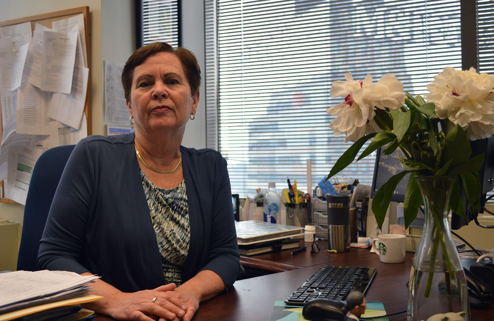
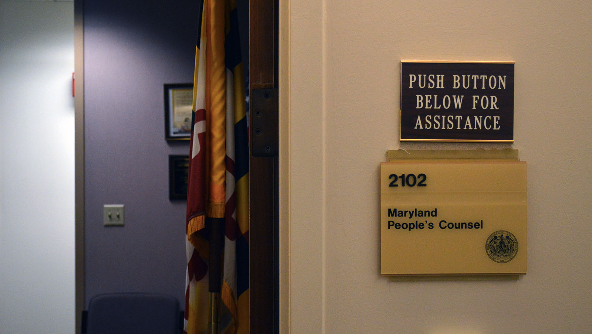

BITTER COLD : CLIMATE CHANGE, PUBLIC HEALTH AND BALTIMORE
No money, no heat: aid programs leave many out in the cold
BALTIMORE — Every year, as winter approaches, BGE and other utility companies step up shutoffs of power to customers behind in their bills, increasing residents’ risk of suffering serious cold-related health problems.
Customers whose power is off at the end of October aren’t protected by state regulations that restrict — but don’t eliminate — disconnections from Nov. 1 through March. To be reconnected during the winter or after it, customers who owe utilities money must make arrangements to pay up. But that’s a financial hurdle for many.
Shutoffs are not the only challenge for people trying to stay out of the cold — indoors as well as outdoors. Most people eligible for state bill assistance programs don’t take advantage of them, some landlords get away without providing heat and, in Baltimore, city government struggles to protect the elderly and ill during cold snaps because so many people are socially isolated.
In April, Gov. Larry Hogan signed legislation to narrow a gap in protection for the most vulnerable. The new Critical Medical Needs Program uses "navigators" to help identify people with severe conditions who are eligible for bill-paying assistance under current rules and speed up that assistance so they don’t lose power in the meantime.

Baltimore City Hall (Jerry Jackson, The Baltimore Sun)
People with severe problems need help, said Mark Romero, a social worker at Maryland Oncology Hematology in Silver Spring, who was trained as a navigator in a pilot project that preceded the legislation.
“Getting your heating turned off in the winter when you are experiencing heavy duty chemotherapy... takes things to another level where you can't convalesce outside of your treatment,” he said.
Paula Carmody, who represents residential utility customers as head of the Office of People’s Counsel, says the overriding problem for low-income Marylanders is energy affordability. And that won’t go away with the Critical Medical Needs Program.
“Can you expect these households to consistently make payments on [large] bills month after month after month, and make those payments in full?” she said. “For a lot of these households the answer is no.”
Paula M. Carmody, Maryland People's Counsel (Dan Novak, Capital News Service)
Of the nearly 450,000 low-income households in Maryland, about one in five live in Baltimore and spend an average of 18% of monthly income on energy bills — nine times the average for more affluent households across the state, according to a study done for the People’s Counsel by the Applied Public Policy Research Institute for Study and Evaluation.
Carmody says it’s unrealistic to expect people with a small income to be able to pay more than 6% of it for energy and still have enough money to pay for other essentials. But the director of the state Office of Home Energy Programs, Bill Freeman, said Maryland offers generous benefits relative to the rest of the country. Reducing the energy burden for the poorest households to 6%, he added, is a goal that would require benefits “beyond anything we’ve seen.”
Even when cold-weather restrictions against turnoffs are in place, customers must make arrangements with utility companies to catch up on their bills, which may rise during the protected period in the winter before coming due in April.
Making matters worse, an attempt to help Marylanders control their energy bills has backfired for many. To introduce competition into the marketplace of electricity and natural gas prices, Maryland and other states have allowed consumers to go outside of their utility company to choose from among lists of approved suppliers. But supply prices can go up as well as down, causing sharp bill increases that are especially hard on those with small incomes.
Between 2014 and 2017, Maryland households paid a combined $255 million more to third-party suppliers than if they had continued to buy gas and electricity from their utility company, according to a study by the Abell Foundation in Baltimore. Even if they don’t supply gas and electricity to a customer, companies like BGE, a subsidiary of Exelon, charge for delivering them.
“We're starting off with a situation where people have energy burdens which may or may not be fully addressed by the energy assistance dollars available,” Carmody said. “But they could end up going backwards if they end up signing contracts unbeknownst to them that have them paying higher electric or gas prices than they should.”
Thousands Lose Power
In the Baltimore area, thousands of BGE customers are shut off for nonpayment each year, while others cut back on heat to save money. Some tenants face the added problem of landlords who don’t keep the heat on.
Matt Hill, an attorney and head of the Human Right to Housing Project at the Public Justice Center in Baltimore, said he has known “many, many renters who have not been able to heat their homes and are just getting by,” often with blankets given to them by family or friends. “They are at risk of anything: hypothermia, all types of other sort of cold-related incidents.”
Insufficient weatherization is another costly problem for tenants, Hill says.
“If the landlord doesn’t have proper double-paned windows, hasn’t repaired that crack under the door, our clients’ bills can shoot up to be double of what the normal bill might be,” he said.
“I’ve seen clients living in two-bedroom rowhouses paying $400, $500 a month in [BGE’s service area], oftentimes because their landlords have been negligent in trying to keep property up to at least a bare minimum level of energy efficiency or just code — just keeping up with the housing code.”
Tenants may apply for home weatherization improvements like better insulation or lighting retrofits to reduce energy consumption, but landlords must agree to participate. Just one in eight low-income renters in Baltimore has taken advantage of weatherization assistance, according to the People’s Counsel report.
Shutoffs are particularly dangerous to low-income people. Certain chronic diseases affected by cold weather are more prevalent in poor neighborhoods in Baltimore, according to hospital and census data analyzed by Capital News Service. Many ailments — from asthma and cardiac disease to diabetes and mental illness — are exacerbated by exposure to cold, which weakens immune systems, research shows.
“If you don’t have heat or electricity, it’s a health and safety issue,” said Carmody. Moreover, she says, when power goes off, tenants are more likely to be evicted by their landlords, triggering a downward spiral for families.
Baltimore’s health department has primary responsibility for public health. When temperatures, including wind chill, are expected to drop to 13 degrees or below, it sounds a Code Blue Extreme Cold alert activating relief efforts by multiple agencies.
The department provides extensive information online about the dangers of extreme cold, tips on coping and the services the city provides, including shelters with extended hours for homeless persons and so-called warming centers, like library branches, where people can find temporary relief.
Trouble is, about a third of Maryland’s low-income population lacks internet access, according to the report done for the Office of People’s Counsel, and warming centers don’t extend their hours deep into the night when it’s coldest. In Baltimore, those most at risk, the elderly and those with chronic diseases, may not be able to get to a center or connect with city agencies.
“Particularly for the most vulnerable groups, they tend to be incredibly isolated populations to begin with,” said Deputy Health Commissioner Jennifer Martin. “It can be very hard to reach the populations that you know are at risk.”
How many people lack power at any given time, including during the winter, is not publicly known. BGE officials said that number fluctuates daily.
What available data show is the numbers of households that are shut off or reconnected each month, but not whether those reconnected had their power turned off earlier in the same month.
What’s clear, according to Carmody, is that utilities have a “perverse incentive” to disconnect households before the start of cold-weather restrictions Nov. 1 and again after they end April 1.
Each October from 2009 to 2018, BGE has disconnected on average 6,864 households. In a statement, BGE asserted that most disconnections occur in October because it is “mild,” and, since October has 31 days, “there are more cut days” available than in some other months.
The Maryland Public Service Commission collects monthly reports from Maryland power companies including BGE, detailing the number of low-income customers whose power is turned off or reconnected. Customers are defined as low-income if they receive bill payment assistance. Due to weather restrictions that make turning power off during the winter more difficult, most turnoffs occur between April and October, peaking in October. While BGE does reconnect about an average of almost 1,000 low-income customers each October, the disconnections and reconnections are not necessarily directly connected. Reconnections in a particular month may not be for the same people who were cut off earlier in that month.
During most of this past winter, from January to March, BGE disconnected 9,617 customers, a small fraction of the more than 375,000 that received shutoff notices for overdue bills totaling $138 million.
During the period when restrictions are in effect, utilities can’t disconnect customers without first filing an affidavit with the state Public Service Commission, which regulates utilities. The affidavit must be filed with the PSC at least 24 hours before termination and state that the company has twice attempted to contact the customer about a looming loss of power. Customers may appeal to the PSC if they feel they have been treated unfairly.
The newly enacted Critical Medical Needs Program, which extends statewide the pilot project begun in 2015, is geared to helping low-income people with the most serious medical needs get swift state assistance with their utility bills. Someone who meets the income criteria must submit a physician-signed form to the utility company.
Romero explained that navigators assist patients too unhealthy to apply for assistance on their own.
Funds “are not unlimited,” Romero said, “and so, like any resource that is limited, it needs to be judiciously doled out.”
To help people with low incomes pay utility bills, the Office of Home Energy Programs administers the state’s two largest programs assisting low-income consumers with heating and electric costs: the Maryland Energy Assistance Program and the Electric Universal Service Program.
Maryland utility companies turn off service to low-income customers at different rates throughout the year. Compared with other utilities, a greater share of BGE's low-income turns off occur in colder months — October through March — than in warmer months. The blue line represents the percentage of total turnoffs in a given month by BGE while the purple line represents turnoffs carried out by other Maryland utilities Delmarva Power, Pepco Holdings and Potomac Edison.
Most Don’t Receive Aid
State programs are mostly funded through a combination of federal money and utility customers, who pay a small surcharge on their monthly bill. There is no state money in the general fund allocated to energy assistance. In fiscal year 2018, the two programs provided a combined $102.3 million in bill assistance, about $532 per household.
But according to the study done for Carmody’s office, just one-quarter of households eligible for state energy assistance programs based on income take advantage of them.
“Our reports and our investigations have made it quite clear that only a small portion of our low-income households have access to these programs or are actually enrolling in these programs,” Carmody said. “And even for those receiving assistance, they still are paying a lot more for their essential electric and heating services in comparison to non-low income households.”
Advocates say consumers need help understanding and applying for aid.
“The biggest challenge we find,” said David McMillan, director of the Mayor's Office of Emergency Management, is “connecting people with those programs particularly if you’re socially isolated and you don’t have anybody checking on you and you’re not interfacing with government for any reason,” he said. “How would you know about any of these programs?”
Beyond applying for state assistance, customers may try to set up a payment plan with the utility company. But companies don’t have to do this for customers with poor bill-paying histories, and, as Carmody points out, the payment plans may themselves be unaffordable.
“Offering a payment plan that you know people are going to fail in the first month to meet doesn't make any sense,” she said.
People may also turn to nonprofit groups like the Fuel Fund of Maryland or other private charities as a last resort, but these organizations are limited in the assistance they can provide.
The state is taking some steps to improve outreach and the delivery of aid to people who are unaware of the programs. The General Assembly has directed the Office of Home Energy Programs to submit a report on the amount of additional funding that would be required to raise participation levels in energy assistance programs.
Office of Maryland People's Counsel (Dan Novak, Capital News Service)
Freeman said a good place to start would be integrating the application process for benefit programs like the Supplemental Nutrition Assistance Program with applications for energy assistance, so that if a household is eligible for one program, they automatically qualify for the other. The application processes are separate now, which “makes people go through another bureaucratic process,” he said.
Romero, the social worker, said even when a person is aware of a particular program,“it’s hard to pull the trigger on how to go about the process on something when you have so many other things going on.”
One of Romero’s clients, a Baltimore man with stage 4 colon cancer, came to him in February when he received a termination notice from BGE. Through the pilot Critical Medical Needs Program, Romero was able to arrange a 30-day hold on termination and get the man energy assistance in six days.
“To me, working in oncology, it's such a no-brainer when you see people who simply need this,” Romero said.
Carmody says there’s much more the state needs to do.
“Right now we tend to operate more in a crisis mode,” she said, “and what you really want to do to avoid these kinds of crisis areas is to provide assistance upfront so that their bills and the bill payments are affordable and people can pay them each month and therefore not have to worry about getting those turnoff notices or having services turned off.”
“Whether or not it’s a small number of households, relatively speaking, that are turned off or not, a large number obviously are receiving turnoff notices,” Carmody added. “A large number are falling behind on their bills. We need to continue as a state to work on developing the kind of programs that deliver better assistance to those households in need.”
Danielle Kiefer and Leah Brennan contributed to this story.

Climate change in Maryland is not just about hotter summers. Despite the overall warming trend, expect periods of severe cold in the winter. Read the story.

Cold weather has a profound effect on public health, worsening certain chronic conditions and disproportionately affecting some groups. Read the story.
At the heart of the issues of climate change and public health are residents trying to stay well in the cold. Read the story.
Stay tuned. During the summer, Capital News Service, NPR, the Baltimore Sun and Wide Angle Youth Media will be reporting on the public health effects of climate change during hot weather. Follow the Climate and Health Project blog or sign up for our e-newsletter for details.